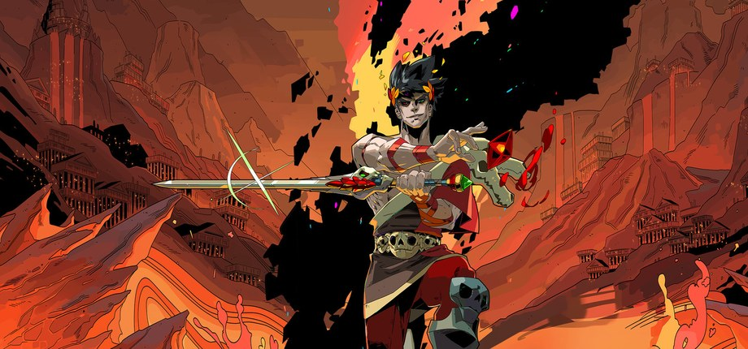

See-through et StretchyStudio sur Zagreus
Le corps utilise les calques See-through. La tête et les cheveux proviennent de l’illustration originale, avec un léger mouvement autour du cou. Les courbes de cette boucle de six secondes ont été réglées pour le test.


La garde de l’épée et le vêtement générés restent approximatifs. Les deux bras sont réunis dans le même calque principal. Le projet StretchyStudio contient la tête originale réintégrée.